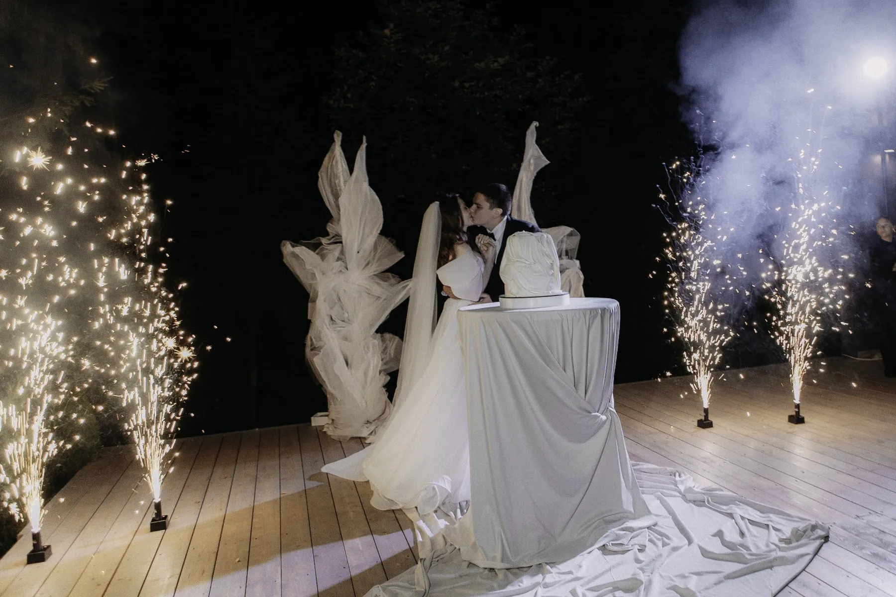

Чёрно-белая свадьба - одна из самых строгих и фотогеничных палитр: белые цветы на тёмном фоне, графичный свет, гости в чёрном и белом. Ошибка здесь видна сразу - зал легко становится холодным или «офисным». Мы оформляем свадьбы под ключ в Москве и Подмосковье и показываем, как сделать чёрно-белый декор живым, на примере нашей свадьбы лета 2026 года.
Свадебный декор · смета за 24 часа
Хотите посчитать декор вашей свадьбы?
Расскажите о дате, площадке и числе гостей, пришлите референсы — предложим идею и посчитаем смету по позициям за 24 часа.
Свадебный декор FFP →Где белый, а где чёрный
В чёрно-белой свадьбе почти всегда больше белого: цветы, текстиль, свечи. Чёрный работает как графика - рамы, подсвечники, стулья, каллиграфия на навигации, ленты, костюмы. Если зал тёмный сам по себе, чёрного в декоре нужно совсем немного. Чтобы белый не был плоским, нужны оттенки: молочный, кремовый, жемчужный; подробнее - в статье про свадьбу в белом цвете.
Как это выглядело у нас
Свадьба Дмитрия и Дианы (август 2026, 60 гостей) не задумывалась как чёрно-белая, но приём тот же: тёмные рамы и серый пол, а на этом фоне - только белая флористика. Белые розы и эустома облаками у стола пары, свечи в стекле по фронту и на полу, вечером - белые драпировки и холодные фонтаны на фоне ночного леса. Палитра - белый, графит, кремовый и камень.

Какие цветы выбрать
- Белые розы, эустома, ранункулюсы, гортензия - объём и мягкость.
- Антуриум и каллы - графичные формы, хорошо держат чёрно-белую тему.
- Немного зелени - чтобы белое не было стерильным; или совсем без неё, если нужна строгая графика.
- Чёрные цветы почти не используют - чёрный лучше дать вазами, подсвечниками и текстилем.
Президиум, столы и свет
Президиум - белые облака цветов и свечи, иногда чёрный задник; подробнее - в статье про оформление президиума. На столах - белый текстиль и чёрные детали: салфетки, приборы, номера столов. Свет решает всё: тёплые свечи смягчают контраст, холодный свет делает его резче. О свечах и требованиях площадок - в статье про свечи на свадьбу.
Дресс-код гостей
Чёрно-белая свадьба почти всегда идёт с дресс-кодом: в приглашении достаточно написать «чёрное и белое» или «black & white» и пояснить, можно ли гостям смешивать цвета или выбрать один. Тогда гости становятся частью декора, а фото получаются цельными. Невеста в белом и жених в чёрном на таком фоне читаются особенно графично.
Из чего складывается смета
- Число гостей и столов, формат президиума.
- Объём белой флористики и сезон цветов.
- Текстиль, свечи, свет, навигация.
- Церемония и площадка: город или выезд.
В сметах наших свадеб 2026 года на 40-60 гостей минимальная сумма декора - 150 000 ₽. Подробнее - в статье про стоимость оформления свадьбы.
Как заказать
Расскажите о дате, площадке и числе гостей, пришлите референсы - предложим идею в чёрно-белой палитре и посчитаем смету по позициям за 24 часа. Летние даты 2027 года лучше бронировать заранее. Наши работы - в разделе «Кейсы», свадебный декор - на странице «Свадебный декор».
Частые вопросы
Какие цветы подходят для чёрно-белой свадьбы?
Белые розы, эустома, ранункулюсы, гортензия, антуриум и каллы; чёрный лучше дать вазами и текстилем.
Как написать дресс-код на чёрно-белую свадьбу?
«Чёрное и белое» или «black & white» - и пояснить, можно ли смешивать цвета.
Не будет ли зал слишком холодным?
Нет, если добавить тёплый свет свечей, оттенки белого и мягкие ткани.
Сколько стоит оформление чёрно-белой свадьбы?
Зависит от гостей, флористики и площадки. Смету по позициям присылаем за 24 часа.